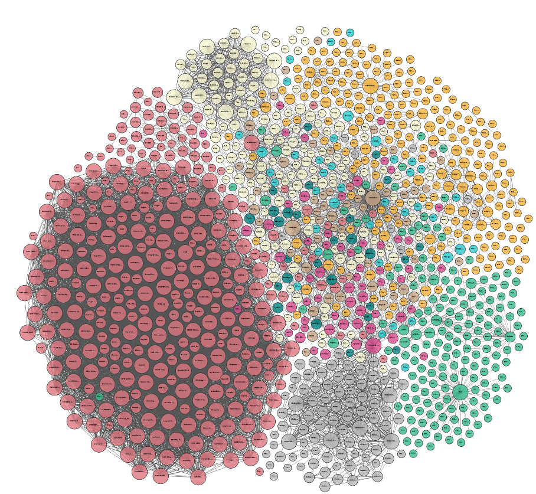

Understanding Knowledge Networks
Krishna Mangaladevi, Wouter Beek, Tobias Kuhn
International Workshop on Linked Data for Information Extraction (LD4IE) at ISWC
Vienna, 2017
What is the Network Structure of the Linked Open Data Cloud?
Do they all look the same?

Or is there a Large Diversity of Familiar Forms?
Or are they Freak Networks with Highly Unusual Properties?
Selected RDF properties
| RDF property | Description |
|---|---|
| foaf:knows | "A person known by this person (indicating some level of reciprocated interaction between the parties)." |
| geop:hasBorderWith | Borders among countries according to the United Nations |
| osspr:contains | "The interior of one object completely contains the interior of the other. Their boundaries may or may not intersect." (inverse of osspr:within) |
| osspr:within | "The interior of one object is completely within the interior of the other object. Their boundaries may or may not intersect." (inverse of osspr:contains) |
| swrc:affiliation | Mapping of organizations to affiliated entities (e.g. employees) |
| lexinfo:partofspeech | "Term used to describe how a particular word is used in a sentence." |
| gn:parentCountry | "parent country" |
| tag:associatedTag | "The object is a Tag which plays a role in the subject Tagging." |
Sizes of analyzed networks
| Network | Documents | Nodes | Edges | Size Class |
|---|---|---|---|---|
| foaf:knows | 421 | 1776554 | 2374275 | Large |
| foaf:knows (Last.fm) | 310 | 315765 | 469361 | Large |
| geop:hasBorderWith | 13 | 132 | 229 | Small |
| osspr:contains | 94 | 7736 | 10098 | Medium |
| osspr:within | 26 | 16623 | 28544 | Medium |
| swrc:affiliation | 508 | 12860 | 12366 | Medium |
| lexinfo:partOfSpeech | 10 | 60700 | 60678 | Medium |
| gn:parentCountry | 14 | 197117 | 197115 | Large |
| tag:associatedTag | 328 | 27469 | 25670 | Medium |
| skos:related | 818 | 208076 | 300250 | Large |
| skos:narrower | 5848 | 181261 | 169489 | Large |
| skos:relatedMatch | 395 | 33862 | 34546 | Medium |
| skos:broadMatch | 45 | 9304 | 7207 | Small |
| skos:narrowMatch | 42 | 1807 | 1338 | Small |
| skos:closeMatch | 419 | 328877 | 254703 | Large |
| skos:exactMatch | 5901 | 263291 | 213306 | Large |
| skos:hasTopConcept | 5854 | 26180 | 25304 | Medium |
Summary of Network Metrics
| Clustering coefficient | Inequality | |||||||
|---|---|---|---|---|---|---|---|---|
| Network | Size | Avg. degree | Local | Global | Bi-partite? | Power-law α | Degree dist. | Comp. size |
| foaf:knows | Large | 2.673 | 0.1017 | 0.0116 | No | 1.992 | 0.6047 | 0.7783 |
| foaf:knows (Last.fm) | Large | 2.973 | 0.0932 | 0.0046 | No | 2.020 | 0.6095 | 0.9911 |
| geop:hasBorderWith | Small | 3.470 | 0.3920 | 0.2304 | No | 4.559 | 0.4179 | 0.6174 |
| osspr:contains | Medium | 2.611 | 0.6667 | 0.0076 | No | 1.9985 | 0.5696 | 0.7079 |
| osspr:within | Medium | 3.434 | 0.6512 | 0.0065 | No | 1.8653 | 0.5696 | 0.7286 |
| swrc:affiliation | Medium | 1.923 | 0.0 | 0.0 | No | 2.453 | 0.4305 | 0.6845 |
| lexinfo:partOfSpeech | Medium | 1.999 | 0.0 | 0.0 | Yes | 1.0277 | 0.4998 | 0.8949 |
| gn:parentCountry | Large | 2.000 | 0.0 | 0.0 | No | 1.253 | 0.5000 | 0.9032 |
| tag:associatedTag | Medium | 1.869 | 0.0 | 0.0 | Yes | 3.0444 | 0.4064 | 0.3638 |
| skos:related | Large | 2.886 | 0.2624 | 0.1119 | No | 2.857 | 0.4864 | 0.4862 |
| skos:narrower | Large | 1.87 | 0.0304 | 0.002 | No | 2.8528 | 0.4273 | 0.7326 |
| skos:relatedMatch | Medium | 2.040 | 1.41E-04 | 2.03E-05 | No | 3.4793 | 0.3846 | 0.5465 |
| skos:broadMatch | Small | 1.549 | 0.0 | 0.0 | Yes | 3.3594 | 0.3248 | 0.3961 |
| skos:narrowMatch | Small | 1.481 | 0.0 | 0.0 | Yes | 2.1632 | 0.2898 | 0.2790 |
| skos:closeMatch | Large | 1.549 | 2.14E-04 | 1.01E-04 | No | 3.1513 | 0.2808 | 0.2620 |
| skos:exactMatch | Large | 1.620 | 0.0878 | 0.1758 | No | 3.212 | 0.3458 | 0.1940 |
| skos:hasTopConcept | Medium | 1.933 | 0.0 | 0.0 | Yes | 1.7919 | 0.4754 | 0.5665 |
foaf:knows (Last.fm subset)

geop:hasBorderWith

osspr:contains

osspr:within
swrc:affiliation

lexinfo:partOfSpeech

gn:parentCountry

tag:associatedTag

Visualizations
| foaf:knows (Last.fm subset) |
geop:hasBorderWith |
osspr:contains |
| osspr:within |
swrc:affiliation |
lexinfo:partOfSpeech |
| gn:parentCountry |
tag:associatedTag |
Visualizations: SKOS
| skos:related |
skos:narrower |
skos:relatedMatch |
| skos:broadMatch |
skos:narrowMatch |
skos:closeMatch |
skos:exactMatch |
skos:hasTopConcept |
Comparison of average degree to other networks

Comparison of global clustering coefficient to other networks